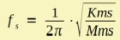
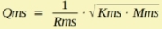

LE Mechanics of Transducer
| Home | LE-Part |
  |
.gif) |
 |
 |
 |
 Mutual calculations |
The basic mechanical model of a transducer for electro-acoustic is straightforward, because there are no gear-boxes, no levelers and no rotational parts. Ideally, the mechanic motion of the membrane should be a controlled translation of the diaphragm. Generally we see rigid body motion at low frequencies. At mid-frequencies there can be structural vibration caused by coupling between the suspension and the membrane. At high frequencies the membrane typically exhibits bending wave vibration. In all cases the structural vibration is super-imposed to the rigid body motion. The real device often features unwanted asymmetric motion, which is called rocking or toggling.
In all models of AKABAK we assume rigid body motion of the diaphragm. Also we ignore rotational motion (toggling). We assume the motor being rigidly fixed to the membrane. Surface vibration can be taken into account with the help of vibration-files, see section VibFile.
See also chapters
LE Diaphragm Parameters
Electro Dynamic - Total Quality Factor Qts
Model
Most speakers can be symbolized with the help of a simple mass-spring system.
We can combine Kms1 and Kms2 and Rms1 and Rms2, which are the lumped components of the spider and the outer suspension (or any other suspension):
Kms = Kms1 + Kms2 = 1/Cms
Rms = Rms1 + Rms2 = 1/Gms
Fundamental Parameters
Mms
Mms is the total lumped mass of the vibrating assembly. Typically Mms is assumed to be measured in vacuum. The unit of Mms is
[Mms] = kg
Normally, we assume Mms to be the mass, which is measured in vacuum. This is so because AKABAK will provide the radiation impedance during simulation.
Kms
Kms is the effective stiffness of all suspensions and possible other springiness. The unit of Kms is
[Kms] = N/m
Data-sheets and papers may use the compliance, which is Kms = 1/Cms.
Rms
Rms is a mechanical resistance assumed to be active inside the springs. The unit of Rms is
[Rms] = Ns/m
Creep
Suspension tend to have a frequency dependent stiffness due to creep. If specified following formula is applied [32]:
Kms(f) = Kms/(1 - λ·log10(f/fs)) for f < fs
Mobility Notation
In Mobility Notation of the mechanical network we have following parameters:
| Potential | Flow | Admittance |
| Velocity | Force | Ymob = F/v |
| Component | Admittance |
| Mass | Ymob = jω Mms |
| Spring | Ymob = Kms/jω |
| Dashpot | Ymob = Rms |
Impedance Notation
In Impedance Notation of the mechanical network we have following parameters:
| Potential | Flow | Impedance |
| Force | Velocity | Zimp = F/v |
| Component | Impedance |
| Mass | Zimp = jω Mms |
| Spring | Zimp = Kms/jω |
| Dashpot | Zimp = Rms |
Design Parameters
fs
The Fundamental Frequency fs of a loudspeaker is defined to be the mechanical or in-vacuum resonance.

Qms
Qms is the Mechanical Quality Factor, which is a measure of resonance due to the presence of the mechanic resistance Rms:

Input Forms
The input forms are part of the Parameter Table. The Parameter Table performs on-the-fly calculation of mutual parameters. For example if you edit Mms the application would calculate either fs or Kms, depending on the selection of Mutual Calculation.
Formula
The name of the parameters are equal to the formula-identifiers:
|